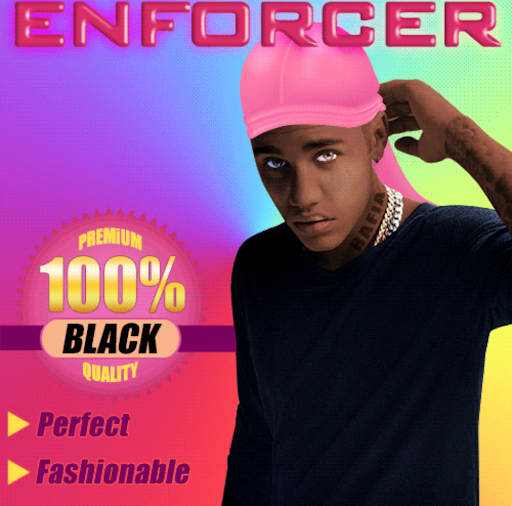
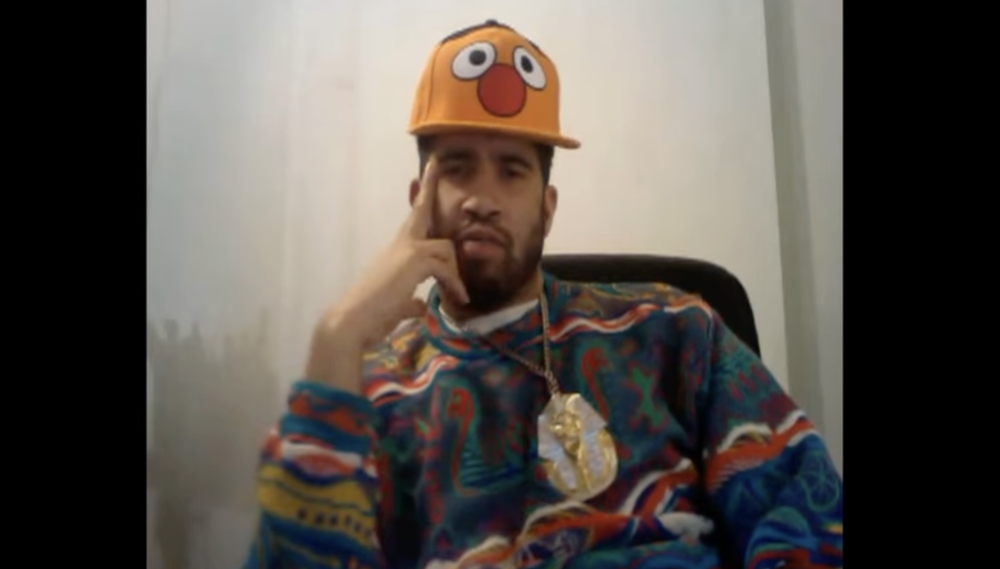

Rent-A-Negro is satirical net art that presents a fictional service renting a Black person to clients for social or cultural capital, exposing the ongoing objectification and exploitation of Black people and labor online.
Artist Bios: Damali Ayo is a multidisciplinary artist and writer whose socially engaged works confront racism, cultural appropriation, and everyday racial dynamics. She created conceptual art from 1997 to 2017.

Keith Obadike put his “Blackness” up for sale on eBay, critiquing how Black identity and culture are commodified and reduced to cultural capital in digital and capitalist spaces.
Artist Bios: Keith Obadike is a sound and multimedia artist whose work examines race, digital culture, and the complexities of online identity through conceptual and internet-based media.

Keeping Up Appearances is a minimalist hypertext net art piece that reveals hidden text through cursor interaction, exposing the unequal and uncomfortable experiences of a young Black woman navigating social space.
Artist Bios: Mendi Obadike is a poet, scholar, and interdisciplinary artist whose work explores Black womanhood, intimacy, and power through experimental text, sound, and performance.

Black Bieber is an animated GIF depicting Justin Bieber’s skin tone shifting between light and dark, commenting on cultural appropriation and the entertainment industry’s selective valuation of Blackness.
Artist Bios: RaFia Santana is a Brooklyn-based digital artist whose work examines Black visibility, bodily autonomy, and internet culture through GIFs, performance, and multimedia practices.

The Black Factory is a participatory net and performance art project that collects objects representing “blackness,” critiquing stereotypes, commodification, and assumptions through community engagement.
Artist Bios: Pope.L was a pioneering performance and conceptual artist whose endurance-based and absurdist works challenged assumptions about race, class, and marginality.

The Interaction of Coloreds presents a fictitious color-check system assigning hexadecimal codes to users’ skin tones, revealing how digital platforms replicate colorism and racial profiling.
Artist Bios: Mendi and Keith Obadike collaborate on digital and sonic works that interrogate race, technology, and representation through networked and conceptual media.

New Black Portraitures is a browser-based exhibition exploring how Black identity is constructed, performed, and consumed across digital platforms.
Artist Bios: Aria Dean is an artist, writer, and curator whose work critically examines Blackness, visibility, and digital mediation.

Art Thoughtz is a satirical YouTube-based series in which Musson critiques racial hierarchies and expectations placed on Black artists within the contemporary art world.
Artist Bios: Jayson Musson is a multidisciplinary artist whose satirical media works expose elite cultural attitudes and the policing of race and authenticity.